First domain, first internet money.
My first websites started as internet experiments. AdSense made it feel real: a website could create leverage from a small town.
About Priyam
I am a founder and operator from Bangalore, building across AI video, creator tools, payments, affiliates, and internet distribution.
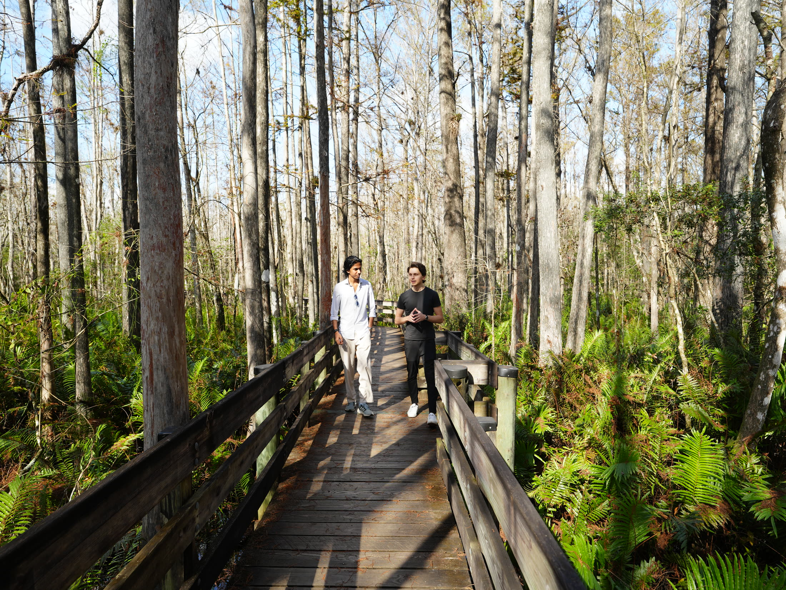
My work today sits across AI video, creator software, payments, distribution, and a few smaller internet bets. The common thread is simple: build useful software, understand where attention is moving, and turn distribution into leverage.
I care about products that are easy to understand, easy to sell, and useful enough that creators, founders, and internet businesses can feel the difference quickly.
The earlier story matters too. Before companies, there were games, little films, remote-controlled airplanes, half-broken websites, and the feeling that the internet could make a small-town kid feel less small.
That instinct never really changed: build the thing, put it online, see what people do, and keep moving.
Early signal
Games made computers feel magical first. Then YouTube, websites, app templates, little tools, and internet money made them feel like leverage. Most of the current work still comes from that same loop: curiosity, shipping, distribution, repeat.
My first websites started as internet experiments. AdSense made it feel real: a website could create leverage from a small town.
I learned by shipping. Apps, templates, small websites, and niche internet tools taught me how fast feedback turns into leverage.
The college-era products came from the same instinct: spot a small gap, build fast, and let the market teach the next move.
Bangalore became the operating base. The work expanded into YouTube software, AI video, creator payments, affiliate distribution, and products built around attention.
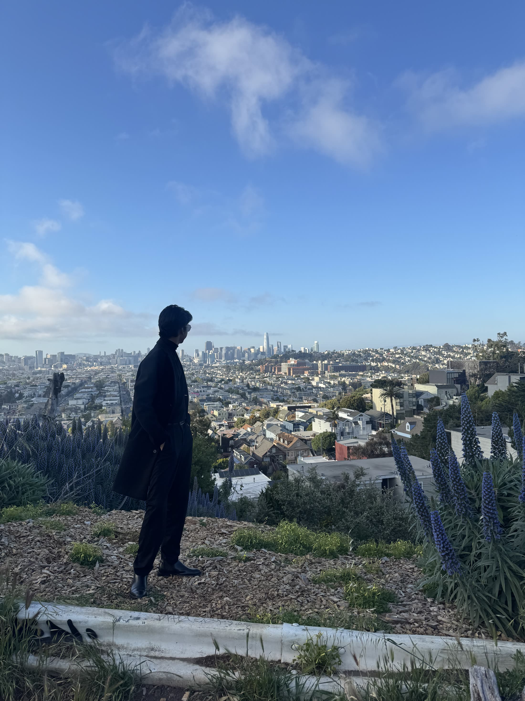
Archive
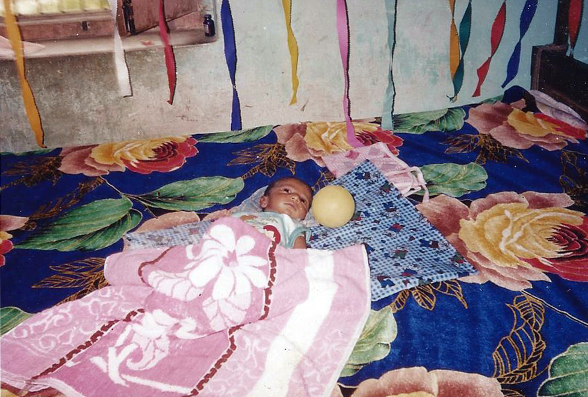
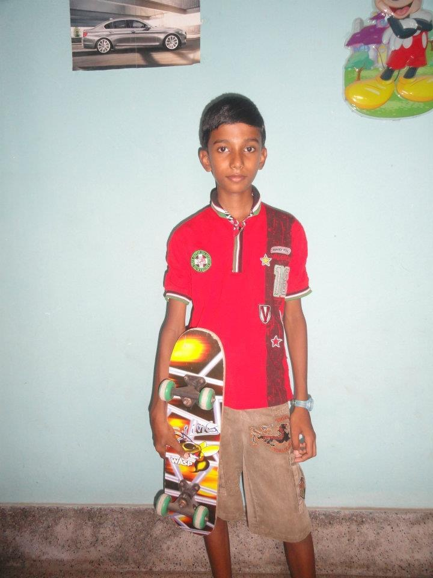

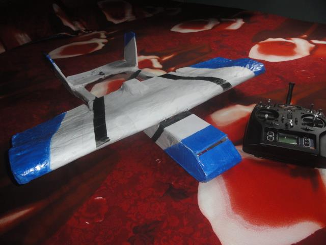
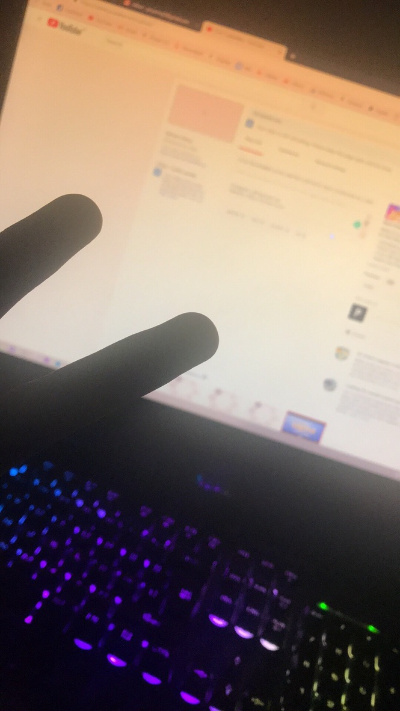
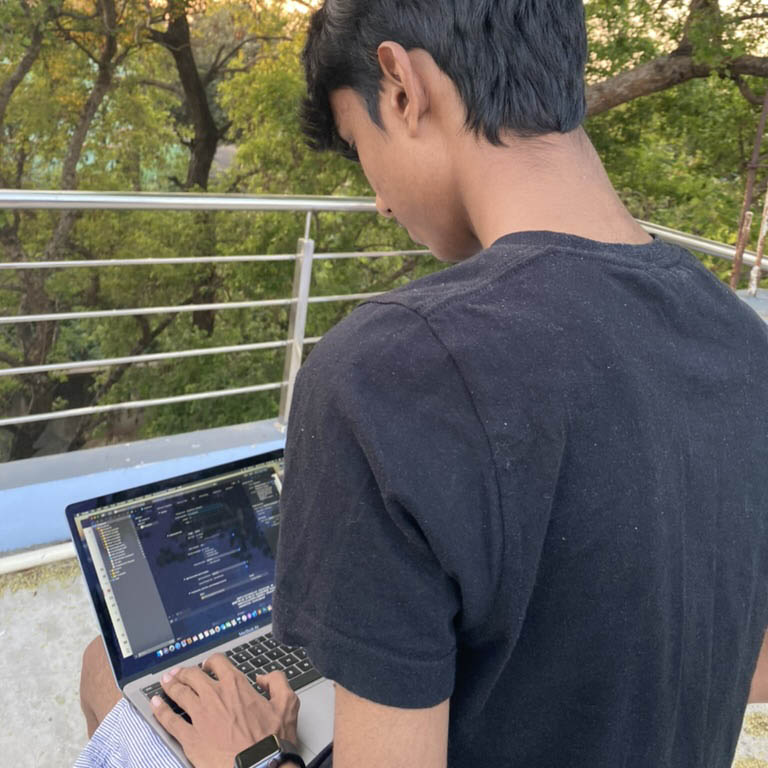
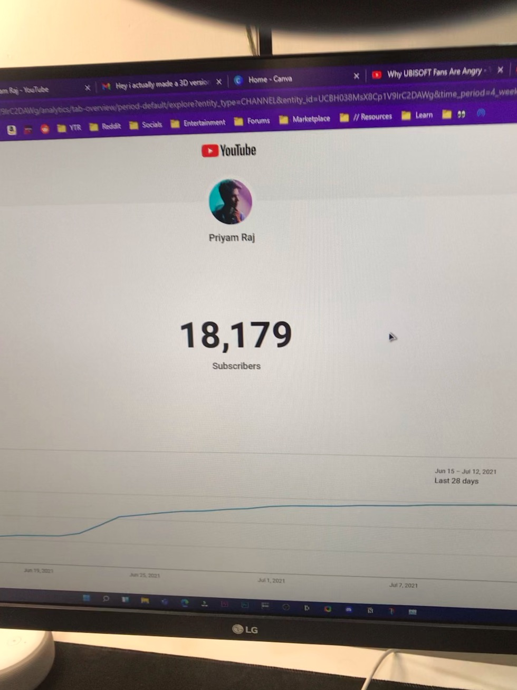
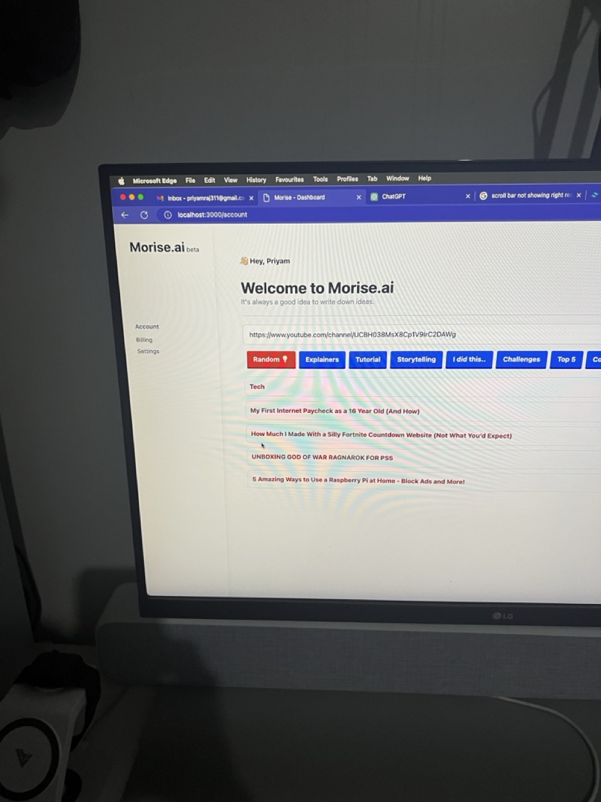
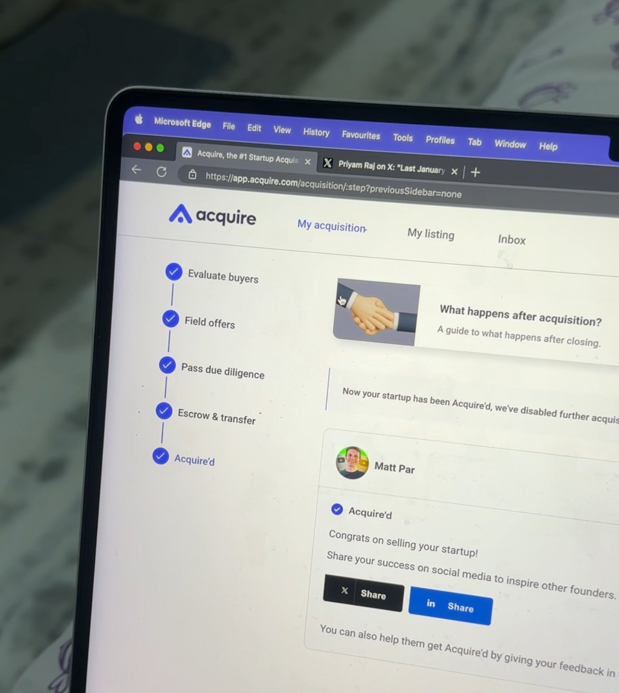
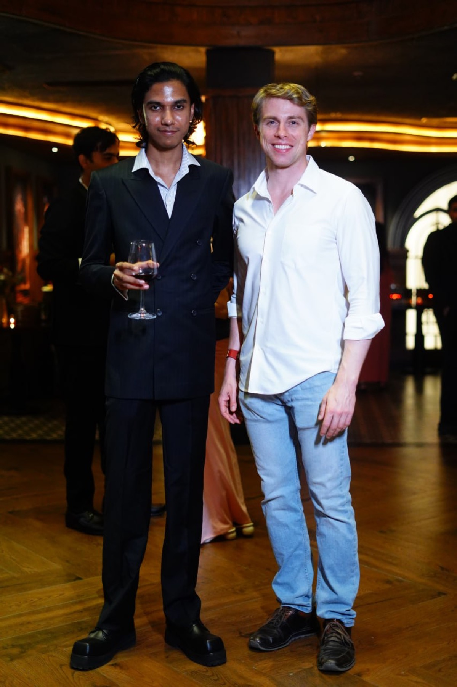
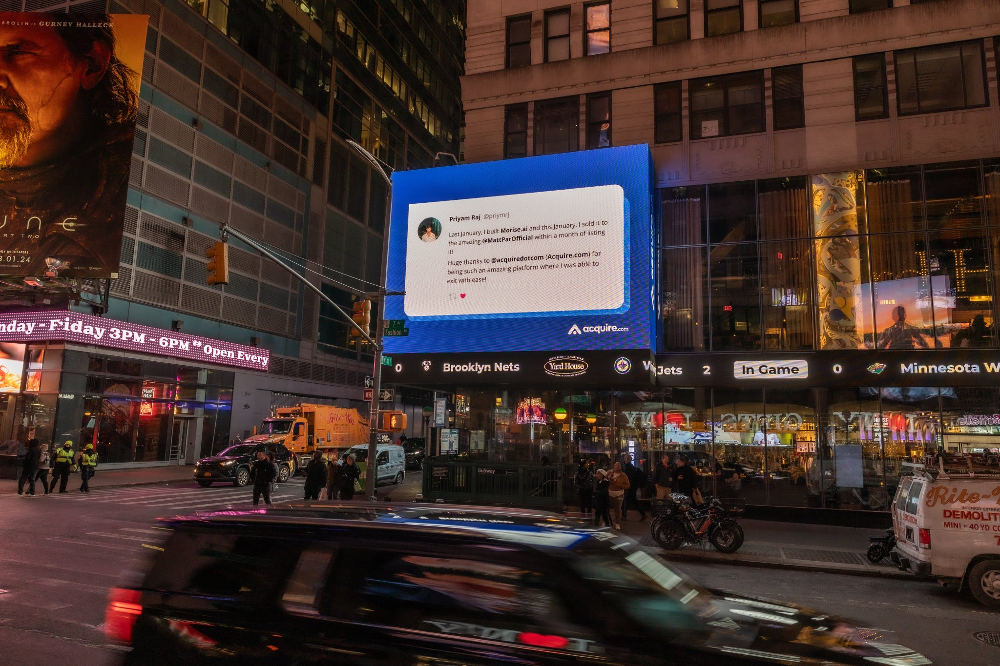
Use the boring thing if it works. Complexity has to earn its place.
A good product still needs a clean story, a clear offer, and a reason to exist now.
Trends matter. Timing matters. Shipping repeatedly usually beats waiting for perfect.